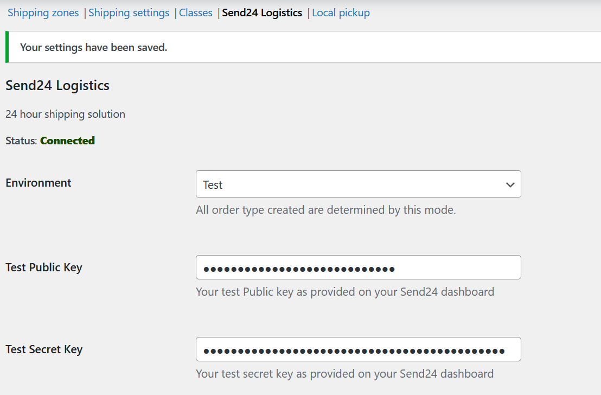
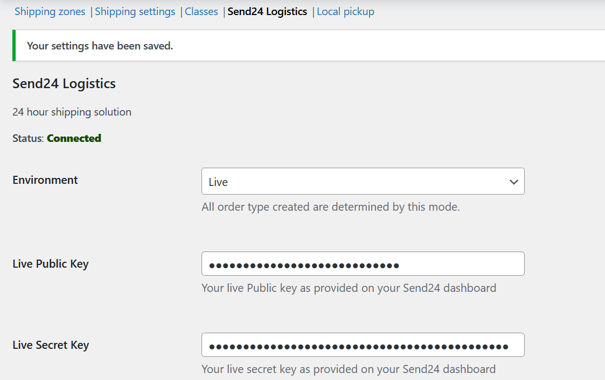

Mode (Test/Live) Configuration
Navigate to WooCommerce > Settings > Shipping > Send24 Logistics.
Switch between Test Mode and Live Mode in the plugin settings.
Test Mode allows you to simulate delivery options without affecting real orders.
Save changes and test the setup using a sample order.
API Keys Setting


Last modified: 19 March 2025